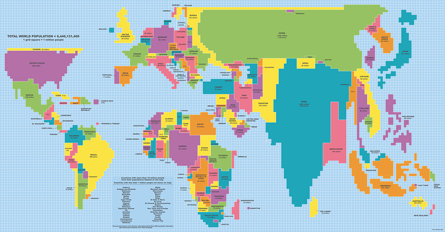
A map of the world where the countries are sized by their populaton
Wow India Is Big
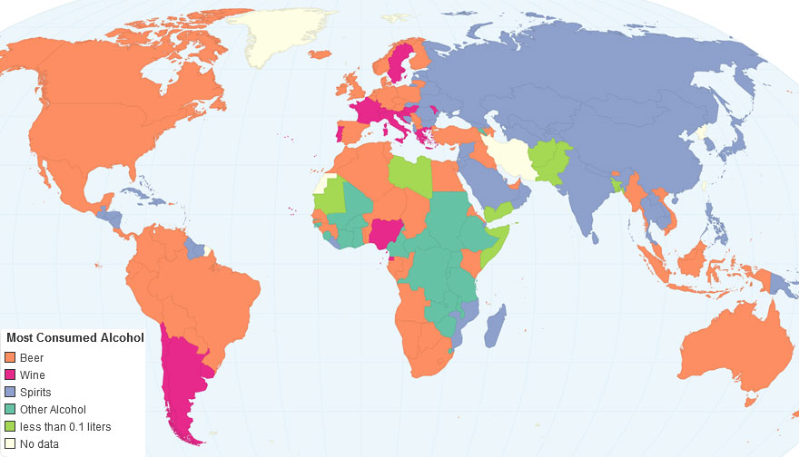
A map of the world that shows the most prominent alcoholic beverage of a country
America Sure Loves Beer
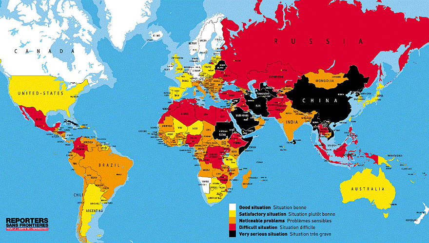
A map of the world that shows the freedom of press of a country
Scandinavia does not have many press limitations 🤔
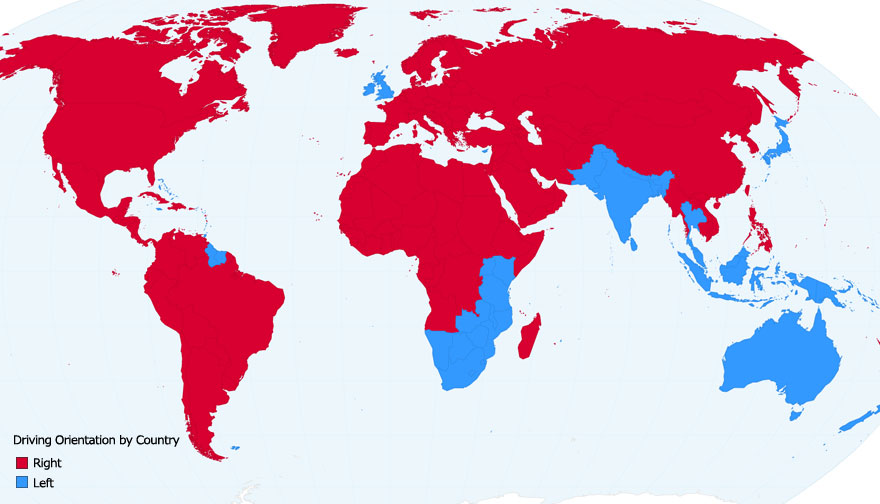
A map of the world that shows whether a country drives on the left side or the right side of a road
A shocking majority drive on the right side of the road
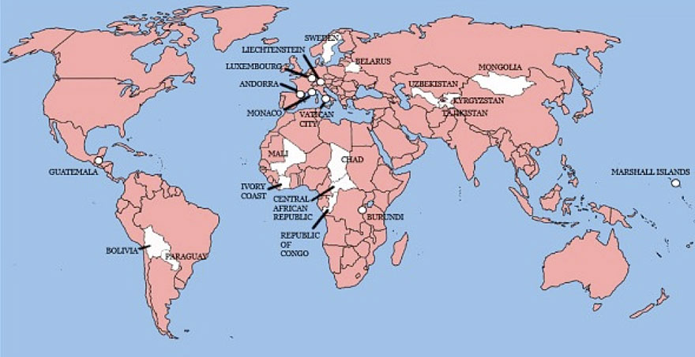
A map of the world that shows all the countries england has once owned or inhabited
I was not expecting that many countries
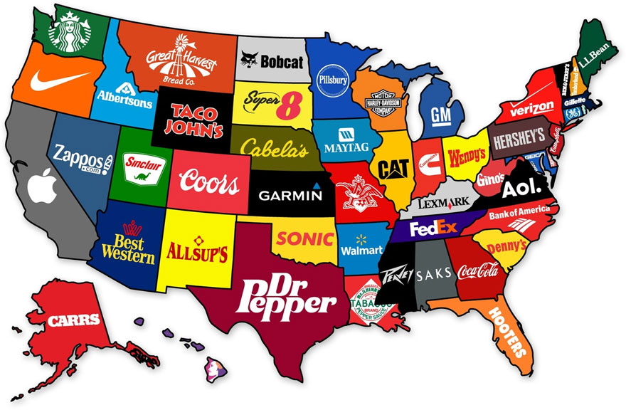
A map of the US that shows the most prominent brand from each state
California seems like a highly fought over place (Apple,Google,Intel, etc...)
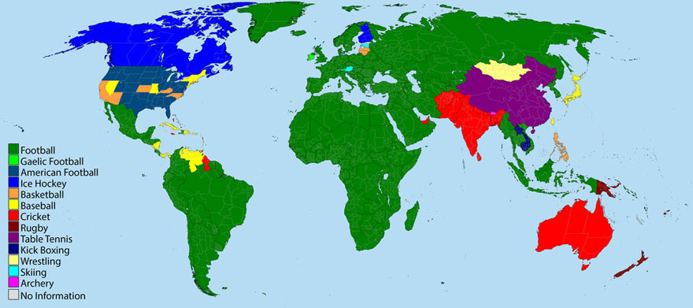
A map of the world that shows the most popular sport of a country
Football is definitely dominating ⚽
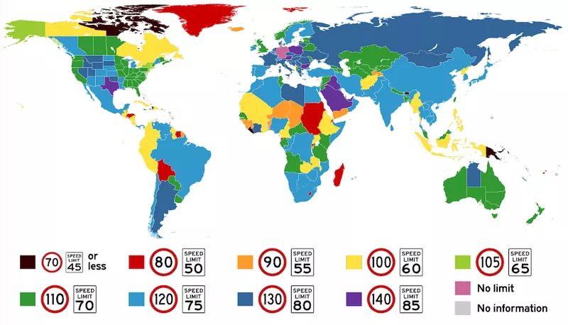
A map of the world that shows the average speed limit of a country
Germany is the only country with no speed limits
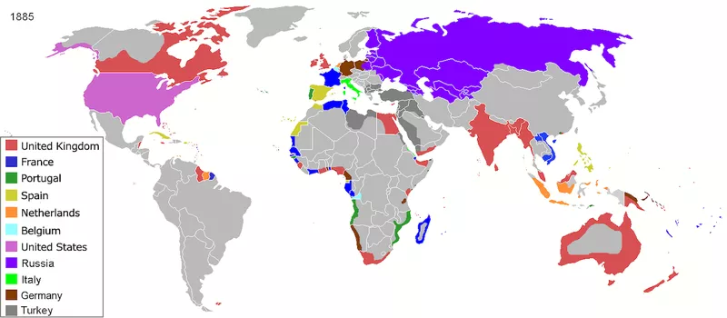
A map of the world that shows which areas were colonized by which country
You can see coastline was more important for colonization (just look at Africa)
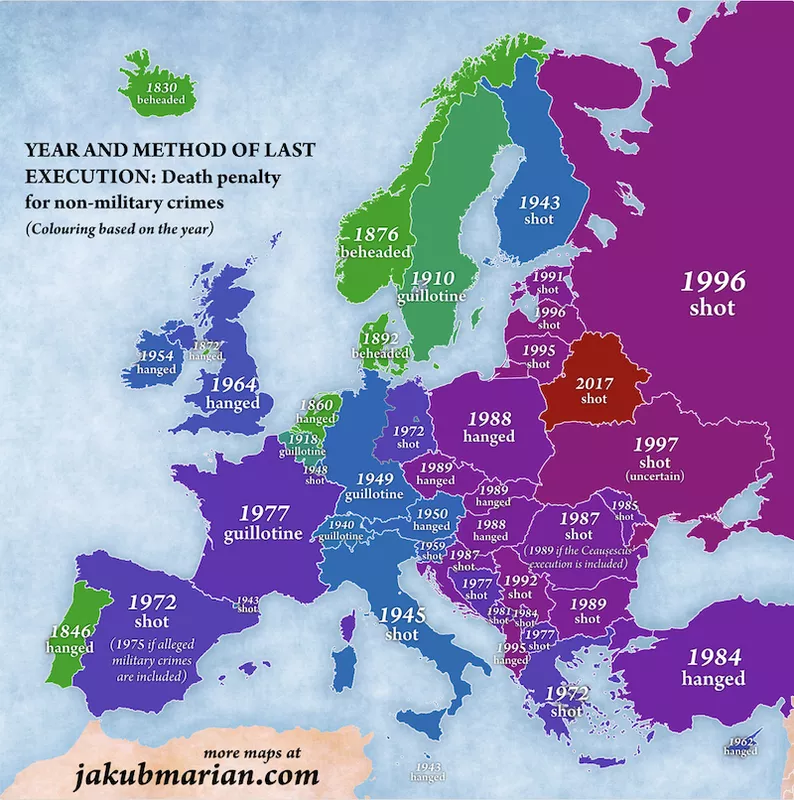
A map of europe that shows when the last person was executed and how they were
Belarus is the only country (in europe) that still uses the death penalty
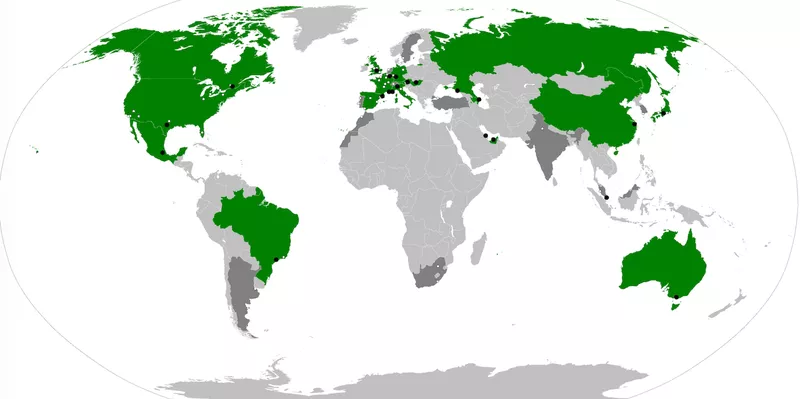
A map of the the world that shows which countries have a f1 grand-prix
America now has three
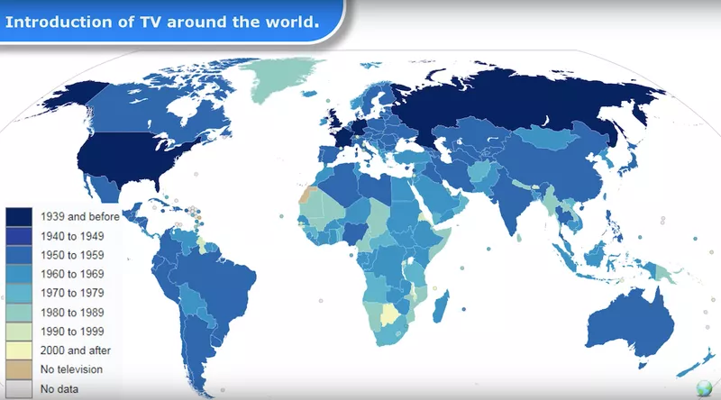
A map of the the world that shows when the country first had TV
Kirabati got TV in 2018 that means there is a 90 year difference from the first country (US, 1928) and the last country

A map of the the world that shows The most popular social media of a country
Facebook is dominating
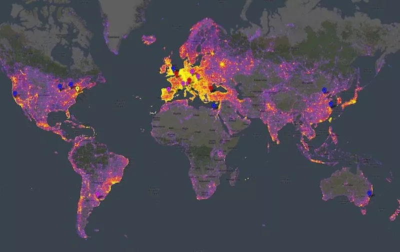
A map of the the world that shows the amout of times it is featured in a photograph (the most photographed areas)
Europe sure is a torist hotspot

A map of the the world that shows The most popular messaging app of a country
Whatsapp is the most popular messaging app

A map of the the world that adjusts the size of each country based on the amount of money spent by tourists
America is by far the biggest (211B)